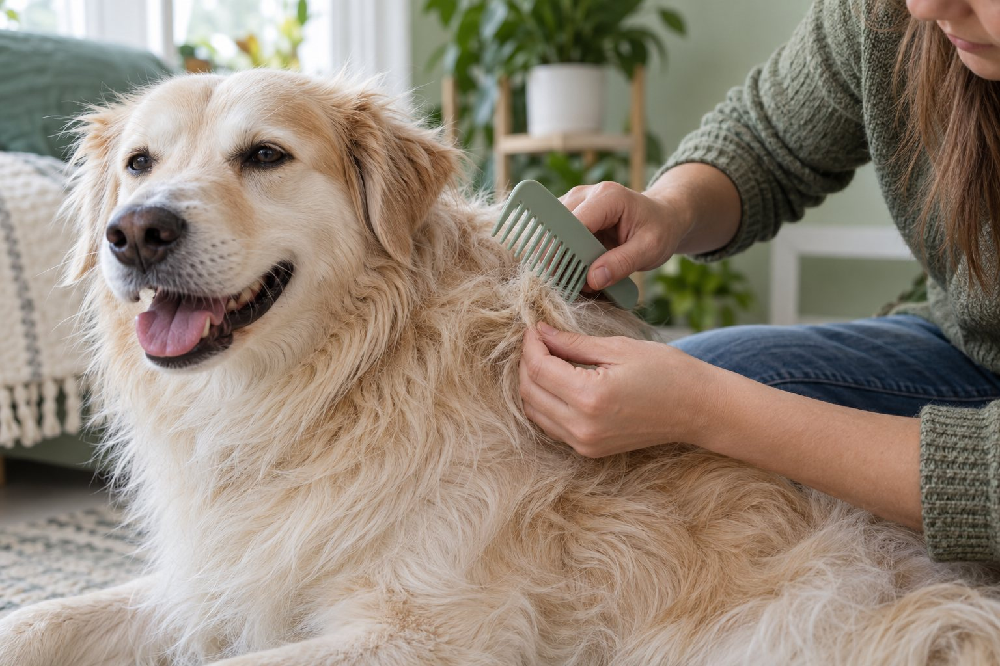

Brush in short, comfortable sessions, match the brush to the coat, and work from the hair ends toward the skin when you find a loose tangle. Never pull a tight mat out by force.
The goal of brushing is a comfortable coat and a chance to notice skin changes, not a perfectly polished dog. A brush that glides over the surface can miss knots close to the skin, while a hurried tug can turn tomorrow’s grooming session into a struggle. Begin with a calm dog, good light, and one small area you can inspect all the way through.
Choose a tool for the coat in front of you
A short, smooth coat often needs little more than a soft rubber grooming mitt or a gentle bristle brush to lift loose hair. A longer coat may need a slicker brush followed by a metal comb to check whether the hair is actually separate near the skin. Dense double coats call for tools and technique that reach loose undercoat without scraping. A curly coat can form tight knots even when its outer surface looks tidy. No single brush is safe or useful for every dog, and the size of the dog does not tell you which tool to buy.
Ask a groomer to show you one pass on your own dog if you are unsure. Watch the angle of the tool, the pressure, and the direction of growth. A comb is a helpful check, not a reason to force through resistance. The teeth should move without dragging skin. If you hear scraping or see redness after a few strokes, stop and reassess. The belly, armpits, behind the ears, and areas under a collar or harness are especially easy to miss because friction brings hair together there.
Set a nonslip mat on the floor and place treats within reach. Let your dog sniff the tool before touching the coat. Brush the shoulder or side for a few seconds, then reward and pause. A dog who moves away, stiffens, or repeatedly turns toward the brush is giving useful information. The response may mean the tool hurts, a knot is present, or the session is too long. Shorten the task instead of holding the dog still to finish everything at once.
Think of frequency as a way to prevent problems rather than a number to satisfy. A long or curly coat may need very frequent checks, while a short coat can remain comfortable with a briefer routine. Weather, shedding, clothing, swimming, and a new harness all change friction and moisture. Check the skin and coat several times before settling on a schedule. If your dog arrives home wet, dry the coat and separate trouble spots before they tighten.
Brush in small sections and keep the skin comfortable
Start where your dog is comfortable being touched. Part a little hair with one hand, look for redness or debris, and brush a narrow section in the direction the coat naturally lies. Hold the coat above the section you are working on, close to the skin without pinching, so any slight pull does not travel through the whole patch. Lift the brush away at the end of each stroke instead of raking it across the skin. For a long coat, a systematic line-by-line approach keeps hidden lower layers from being skipped.
Follow with a comb through the same small section. If it slides easily from root to tip, move to the next area. If it stops, do not yank it free. Put the comb down and use your fingers to separate loose hair near the ends. Work gradually toward the base of the tangle. A small amount of dog-safe detangling product may help if its label suits your dog, but it cannot make a tight mat harmless. Avoid scissors near a mat: skin can be drawn into the knot and cut unexpectedly.
Use the brush to learn your dog’s baseline. Note whether a patch feels unusually warm, smells different, has flakes, or makes the dog flinch. A small burr on the outside of the coat is different from a mat pressed tightly against irritated skin. Photograph a concerning patch and tell a veterinarian or groomer where it is. Brushing is a useful inspection opportunity, but it is not a way to diagnose the cause of itching, hair loss, or a sore.
End while the dog is still willing to participate. One well-handled shoulder is better than a full session that teaches avoidance. On the next day, work another area. If your dog is a puppy, senior, or has a sore joint, position them so they can sit or lie comfortably and change sides without being lifted awkwardly. Ask for professional help if the dog cannot tolerate gentle handling or if a large area is already matted.

Know the difference between a tangle and a mat
A loose tangle gives a little when you separate strands with your fingers. A mat feels like compact felt and may sit almost against the skin. The outer coat may conceal its size, so do not assume that a small visible knot is small underneath. Mats can trap moisture and debris and can pull when a dog walks or stretches. Once hair is tightly packed, repeated brushing may be painful and ineffective. A groomer can often choose a safer method, while skin that is red, wet, wounded, or painful deserves veterinary assessment first.
Check high-friction places after walks, bath days, and harness use. Behind the ears, under the front legs, along the chest, and near the tail are common sites. Long coats also collect seeds, twigs, and sand. Remove a loose object carefully if it is on the surface; do not dig at anything embedded in skin. If you find a new lump or sore under a knot, stop pulling and arrange help. The aim is to preserve your dog’s comfort, not to save every strand of hair.
Consider a dog who returns from a rainy walk with a damp chest and a small knot beneath the harness. Dry the area with a towel, remove the harness, then check the knot with your fingers. If it opens with gentle separation, comb a little at a time and reward pauses. If it does not move, leave it for a groomer rather than pressing harder. Review the harness fit afterward, because a rubbing strap may recreate the problem. That sequence tackles both the immediate tangle and the reason it formed.
Bathing before removing mats often makes the problem harder. Water can tighten tangled hair, and a dense coat may stay damp against the skin. Brush and comb manageable areas while dry, then decide whether a bath is needed. After washing, dry thoroughly using a method your dog tolerates and check friction points again. If your dog has a medically prescribed bath, ask the veterinary team how to handle mats without delaying treatment.
Quick coat check
- Comb moves freely Continue a short, gentle session.
- Loose small tangle Separate from the hair ends without pulling skin.
- Tight mat or painful skin Stop; ask a groomer or veterinarian for help.
Build a routine your dog can accept
Leave the brush where it is easy to find and connect grooming to a quiet moment rather than an emergency. A few strokes after an evening walk can be enough to inspect a problem area. Begin with a predictable cue, allow the dog to approach, and offer a treat for calm stillness. Move the brush away before the dog needs to protest. Gradually add time only when the dog remains relaxed. Some dogs prefer standing; others settle on a rug. A predictable beginning and end can make both options easier.
Watch more than whether your dog stays in place. Relaxed muscles, normal breathing, and willingness to take a treat suggest the task is manageable. Freezing, whale eye, lip licking, pulling away, or snapping means it is time to stop and consider why. Pain from an unseen sore may make even a soft brush unacceptable. If a previously cooperative dog suddenly dislikes grooming, arrange a veterinary check instead of assuming stubbornness.
Keep the routine flexible across seasons. A shedding period may require more frequent short sessions; a newly trimmed coat may need less work for a while. A dog wearing a coat or harness may need extra checks underneath contact points. Record which tool and duration seem comfortable. This is more useful than copying a schedule for another breed. If professional grooming is part of the plan, ask exactly what you should do between visits and which areas are most likely to knot on your dog.
Avoid turning brushing into a contest with an active dog. A short sniff walk or play period first may help, but do not groom immediately after hard exercise when your dog is hot and panting. Pause for water and rest. Children can help offer treats under supervision, yet an adult should handle the brush and decide when the session ends. Your dog should always have room to move away from uncomfortable contact.
When home brushing is not enough
Ask a groomer for help when comb teeth cannot pass through a mat without force, when several areas are tightly felted, or when your dog reacts strongly to gentle handling. Tell the groomer about skin concerns, previous injuries, and any difficulty standing. A shorter coat may be kinder than a long, painful dematting session. If the skin under a mat is red or broken, or your dog has persistent itching, odor, or hair loss, contact a veterinarian as well. Grooming cannot substitute for examining a skin condition.
Do not apply household oils, strong fragrances, or human skin products to make knots slide out. They may irritate skin or be licked off. Do not attempt to cut a mat away with scissors close to the body. If a professional recommends clipping, ask how to keep the coat comfortable as it grows back and when to resume brushing. The next routine should start with short sessions and the right tool rather than waiting until another large knot appears.
A good home goal is modest: you can see the skin where appropriate, your dog accepts a few gentle passes, and your comb does not repeatedly catch at friction points. Take a dated photo of a problem area if you are monitoring whether it improves. If the coat suddenly changes texture, becomes greasy, or sheds in patches, a veterinarian can help decide what that change means. Treat the coat as one clue about wellbeing, not a cosmetic project.
Pair this guide with the site’s bathing advice when planning a full grooming day, but separate the tasks if your dog gets tired. Brushing, a bath, and nail care do not all have to happen in one session. A series of calm, successful minutes builds more cooperation than one marathon. You will know the routine is working when it prevents painful knots and gives you an easy way to notice changes early.
A weekly checklist can make the routine less vague. Look behind both ears, beneath the collar, under each front leg, around the tail, and along the belly. Mark an area only when the comb passes comfortably and the skin looks normal. If one location catches repeatedly, shorten the interval for that location rather than increasing brushing everywhere. This keeps care focused and avoids unnecessary contact on a dog who dislikes long sessions.
After any professional groom, ask what the groomer found. A note such as “left armpit beginning to mat” gives you a specific place to practice gently at home. If a dog returns with very short clipped hair after severe matting, do not brush sore skin immediately; ask when it is comfortable to resume. Prevention should begin when the coat and skin are ready.
Continue exploring
For a broader routine, read How Often Should You Bathe Your Dog?, How to Clean Your Dog's Ears Safely at Home, and How to Fit a Dog Harness for Comfortable Walks.
Frequently Asked Questions
Should I brush my dog before or after a bath?
Check and gently separate manageable tangles before bathing. Water can tighten existing knots. Once the dog is completely dry, comb through friction areas again. Tight mats need a groomer or veterinarian rather than forceful home brushing.
What if my dog hates the brush?
Use shorter sessions, reward calm contact, and try a softer tool or different position. Stop if the dog seems painful or suddenly resists ordinary touch. A veterinary examination may be needed before retraining the routine.
Can I cut a mat out with scissors?
Avoid scissors close to the skin. Skin can be pulled into a mat and cut even when the knot looks superficial. Ask a groomer about safe removal, and ask a veterinarian first if the area is sore or wounded.
Editorial references
These resources informed the general guidance in this article. They do not replace advice tailored to your pet.
This guide offers general information. Your pet’s age, health, and history may call for a different plan. For medical concerns, ask your veterinarian.